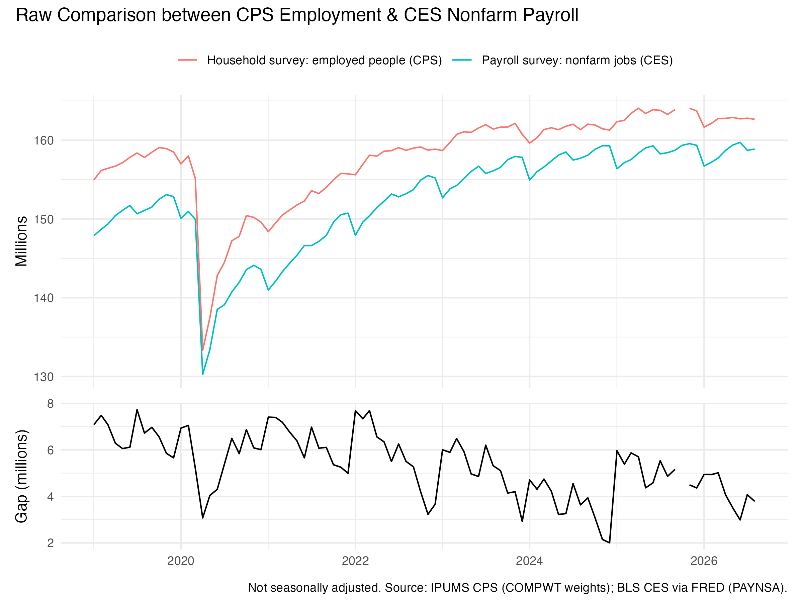
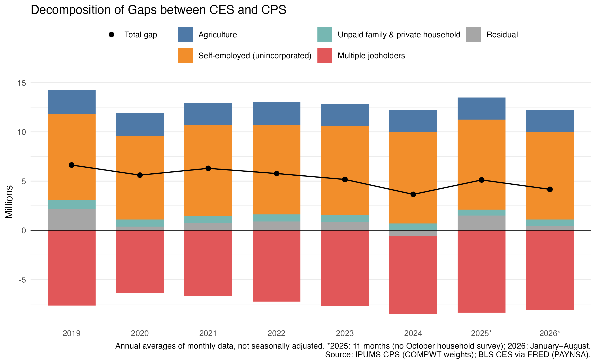
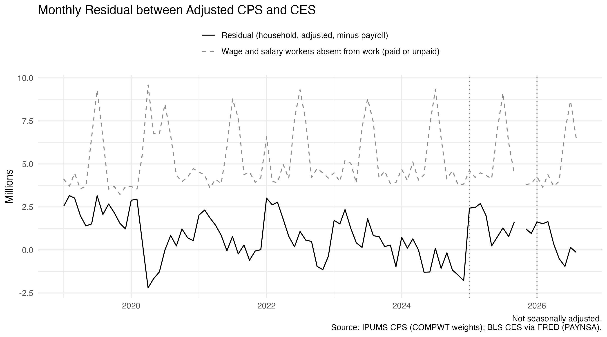

Rebuilding BLS’s bridge between the household and payroll surveys from IPUMS CPS microdata shows that definitions explain most of the gap, and that the leftover moves when the household survey’s population estimates are wrong.
Published
September 28, 2026
The Bureau of Labor Statistics (BLS) publishes two monthly measures of U.S. employment. The payroll survey, also known as the Current Employment Statistics (CES), asks businesses how many jobs they have and produces the nonfarm payroll number from my first post. The household survey, also known as the Current Population Survey (CPS), asks households whether their members are working.
A problem that the payroll number is facing is that it has become harder to read. The CES response rate hovered around 60% in the decade before the pandemic and has since fallen below 45%,1 which makes its early estimates less reliable. As such, analysts, markets and the Fed increasingly check it against the household survey. But the two don’t usually agree. In 2025 the household survey found about 163.5 million employed people, while payrolls counted about 158.4 million jobs, which is a gap of 5.1 million. Before one survey can check the other, we need to know what that gap is made of. This post asks how much of it is simply the two surveys counting different things, and how much is left over, or the residual.
BLS publishes a recipe for translating one concept into the other. Starting from household employment (HE), I subtract the groups that are excluded from the payroll measure: agriculture (A), the unincorporated self-employed (S), unpaid family workers (UFW) and private-household workers (PHW). Then I add back the second jobs of multiple jobholders (M). Whatever still separates the result from payroll jobs (NFP) is the residual (R):
\underbrace{HE - NFP}_{\text{gap}} \;=\; A + S + UFW + PHW - M + R
The five bridge terms are definitional differences, and neither survey is wrong about them. The residual is what the definitions cannot explain, so it is where at least one survey is off.
Rearranging the identity gives the residual directly. For each month t:
R_t \;=\; \underbrace{HE_t - A_t - S_t - UFW_t - PHW_t + M_t}_{\text{household employment on the payroll concept}} \;-\; NFP_t
Every term except NFP_t is a monthly population total estimated from the CPS microdata with the weights described in the next section, and NFP_t is the payroll count for the same month. A positive R_t means the household survey, once put on the payroll survey’s definition, still counts more workers than payrolls do; a negative R_t means it counts fewer. For January 2019, in millions:
The annual figures in the decomposition chart below are averages of these monthly values.
Data and weights
The household data are IPUMS CPS basic monthly microdata from January 2019 to August 2026, 91 months in all. October 2025 is missing because the household survey was not collected during the government shutdown. Payroll jobs are total nonfarm employment, not seasonally adjusted, in their current vintage.
Every number here is a population total, so each respondent has to count for the number of people they represent. I use COMPWT, the composite weight BLS uses for its published estimates. With it, my January 2019 employment total is 154.964 million, exactly BLS’s published figure. The basic weight WTFINL gives 155.580 million, with an excess of 616,000, and an unweighted count of survey rows would not accurately reflect the country as a whole.
The conditions in this code keep the categories from overlapping, so each person is subtracted at most once. A self-employed farmer counts only as agriculture, and a self-employed nanny only as self-employed.
The gap

The household survey sits above payrolls in every month. The gap was about 7 million in 2019 and narrowed to between 2 and 4 million by late 2024. Both series are unadjusted, so the gap wobbles with the seasons. But the jump between December 2024 and January 2025, about 4 million, is far too large to be seasonal. To see what drives a move like that, the gap has to be decomposed.
Decomposition by Year: CES vs. CPS

Bars above zero means that the categories widen the gap and bars below narrow it. The dots mark the net gap. Based on the chart, it is obvious to see that definitional differences account for most of the gap in every year: 4.4 of the 6.6 million in 2019, and 3.6 of the 5.1 million in 2025. Self-employment is the largest single component, usually around 9 million. Multiple jobholding narrows the gap, and it grew from 7.7 million in 2019 to 8.4 million in 2025, which is the main reason the definitional part of the gap shrank over time.
The grey residual is the more interesting part. It was 2.2 million in 2019, under 1 million from 2020 to 2023, negative in 2024, and back to 1.5 million in 2025. That swing follows from how the household survey is built. Each January it switches to new Census population estimates and never revises earlier months. BLS reports that the January 2025 update added 2.0 million to employment, mostly because of higher estimates of immigration. The microdata from CPS show the same thing as well. Household employment usually falls about 0.8 million from December to January, but in January 2025 it rose by 1.05 million, an excess of about 1.9 million.
The update can also move in the other direction. In January 2026, lower estimated net migration and a Census methodology change cut household employment by 1.4 million, according to BLS. My decomposition shows a shortfall of about 1.2 million against a typical January.
Residual Analysis

The monthly residual, plotted here next to the number of wage and salary workers absent from work, shows both population updates as jumps at the dotted lines. Its largest move, though, is not in a January. Between February and April 2020 the residual fell by about 5 million, from +3.0 to −2.2 million, while absent wage and salary workers jumped from 3.5 million to 9.6 million. Unpaid absentees count as employed in the household survey but not on payrolls, so if they were driving the residual it should have risen. Instead it fell, so something else was at work. One possibility is the payroll survey’s reference period. Payrolls count anyone paid for any part of the pay period that includes the 12th day of each month, so workers laid off after the 12th still appear as jobs. Another is that in-person household interviews were suspended that spring, so the household survey was measuring less precisely just when the labor market moved fastest.
Takeaway
Most of the gap between the two jobs numbers is definitional. Self-employment and farm work widen it, and multiple jobholding narrows it. Once those are removed, the two surveys agree to within about a million in most years, so the household survey can serve as a check on payrolls, but only after bridging and only once the residual’s large moves are explained.
Those moves have identifiable causes. In 2024 the residual went negative, meaning the household survey sat too low relative to payrolls, and the January 2025 population update then added about 1.9 million to household employment in a single month. So at least part of the household survey’s weakness in 2024 came from its population base, not from the labor market. In spring 2020 the residual also went negative, but there the likelier causes are the payroll survey’s pay-period definition and disrupted household interviews. The practical rule is to compare the two surveys only after bridging, and to treat a January jump in household employment as a population revision until shown otherwise.
Data and code
Household survey: IPUMS CPS basic monthly samples, extract cps_00003. Sarah Flood, Miriam King, Renae Rodgers, Steven Ruggles, J. Robert Warren, Daniel Backman, Etienne Breton, Grace Cooper, Julia A. Rivera Drew, Stephanie Richards, David Van Riper, and Kari C.W. Williams. IPUMS CPS: Version 13.0 [dataset]. Minneapolis, MN: IPUMS, 2025. https://doi.org/10.18128/D030.V13.0
Payroll survey: BLS Current Employment Statistics, total nonfarm, not seasonally adjusted, via FRED (PAYNSA), accessed 28 September 2026.
---title: "Decomposition of Differences between CES and CPS Employment Data"description: "Rebuilding BLS's bridge between the household and payroll surveys from IPUMS CPS microdata shows that definitions explain most of the gap, and that the leftover moves when the household survey's population estimates are wrong."date: 2026-09-28categories: [labor market, CPS, IPUMS, ggplot2]---The Bureau of Labor Statistics (BLS) publishes two monthly measures of U.S.employment. The payroll survey, also known as the Current Employment Statistics (CES), asksbusinesses how many jobs they have and produces the nonfarm payroll number from[my first post](../post1/index.qmd). The household survey, also known as the Current PopulationSurvey (CPS), asks households whether their members are working.A problem that the payroll number is facing is that it has become harder to read. The CES response rate hoveredaround 60% in the decade before the pandemic and has since fallen below 45%,[^sf]which makes its early estimates less reliable. As such, analysts, markets and the Fedincreasingly check it against the household survey. But the two don't usually agree. In2025 the household survey found about 163.5 million employed people, whilepayrolls counted about 158.4 million jobs, which is a gap of 5.1 million. Before onesurvey can check the other, we need to know what that gap is made of. This postasks how much of it is simply the two surveys counting different things, and howmuch is left over, or the residual.## Comparison between CPS and CES|| Household survey (CPS) | Payroll survey (CES) ||---|---|---|| Counts | people with a job | jobs || Sample | about 60,000 households | about 119,000 businesses and agencies || A person with multiple jobs | counted once | counted multiple times || Self-employed, unpaid family, private-household workers | counted | not counted || Farm workers | counted | not counted || On unpaid leave | counted as employed | not counted |BLS publishes a recipe for translating one concept into the other. Starting fromhousehold employment ($HE$), I subtract the groups that are excluded from the payroll measure:agriculture ($A$), the unincorporated self-employed ($S$), unpaid family workers($UFW$) and private-household workers ($PHW$). Then I add back the second jobs ofmultiple jobholders ($M$). Whatever still separates the result from payroll jobs($NFP$) is the residual ($R$):$$\underbrace{HE - NFP}_{\text{gap}} \;=\; A + S + UFW + PHW - M + R$$The five bridge terms are definitional differences, and neither survey is wrongabout them. The residual is what the definitions cannot explain, so it is whereat least one survey is off.Rearranging the identity gives the residual directly. For each month $t$:$$R_t \;=\; \underbrace{HE_t - A_t - S_t - UFW_t - PHW_t + M_t}_{\text{household employment on the payroll concept}} \;-\; NFP_t$$Every term except $NFP_t$ is a monthly population total estimated from the CPSmicrodata with the weights described in the next section, and $NFP_t$ is thepayroll count for the same month. A positive $R_t$ means the household survey,once put on the payroll survey's definition, still counts more workers thanpayrolls do; a negative $R_t$ means it counts fewer. For January 2019, inmillions:$$R \;=\; \underbrace{154.96 - 2.41 - 8.66 - 0.04 - 0.80 + 7.37}_{150.42} \;-\; 147.88 \;=\; 2.54$$The annual figures in the decomposition chart below are averages of thesemonthly values.## Data and weightsThe household data are IPUMS CPS basic monthly microdata from January 2019 toAugust 2026, 91 months in all. October 2025 is missing because the householdsurvey was not collected during the government shutdown. Payroll jobs are totalnonfarm employment, not seasonally adjusted, in their current vintage.Every number here is a population total, so each respondent has to count for thenumber of people they represent. I use `COMPWT`, the composite weight BLS usesfor its published estimates. With it, my January 2019 employment total is154.964 million, exactly BLS's published figure. The basic weight `WTFINL`gives 155.580 million, with an excess of 616,000, and an unweighted count of survey rowswould not accurately reflect the country as a whole.```{r}#| eval: false#| code-fold: true#| code-summary: "The weighted totals behind every figure"employment <- cps |>filter(EMPSTAT %in%c(10, 12), AGE >=16) |>mutate(ag = IND >=170& IND <=290) |>group_by(YEAR, MONTH) |>summarise(employed =sum(COMPWT) /1e6,agriculture =sum(COMPWT[ag]) /1e6,self_employed =sum(COMPWT[CLASSWKR ==13&!ag]) /1e6,unpaid_family_workers =sum(COMPWT[CLASSWKR ==29&!ag]) /1e6,private_household_workers =sum(COMPWT[IND ==9290&!(CLASSWKR %in%c(13, 29))]) /1e6,multiple_jobholders =sum(COMPWT[MULTJOB ==2&!ag &!(CLASSWKR %in%c(13, 29))]) /1e6,absent_ws =sum(COMPWT[EMPSTAT ==12&!ag &!(CLASSWKR %in%c(13, 29))]) /1e6,.groups ="drop" )```The conditions in this code keep the categories from overlapping, so each personis subtracted at most once. A self-employed farmer counts only as agriculture,and a self-employed nanny only as self-employed.## The gapThe household survey sits above payrolls in every month. The gap was about 7million in 2019 and narrowed to between 2 and 4 million by late 2024. Bothseries are unadjusted, so the gap wobbles with the seasons. But the jump betweenDecember 2024 and January 2025, about 4 million, is far too large to beseasonal. To see what drives a move like that, the gap has to be decomposed.## Decomposition by Year: CES vs. CPSBars above zero means that the categories widen the gap and bars below narrow it. The dots mark the netgap. Based on the chart, it is obvious to see that definitional differences account for most of the gap in every year: 4.4 of the 6.6 million in 2019, and 3.6 of the 5.1 million in 2025. Self-employment is thelargest single component, usually around 9 million. Multiple jobholding narrows the gap, and it grew from 7.7 million in 2019 to 8.4 million in 2025,which is the main reason the definitional part of the gap shrank over time.The grey residual is the more interesting part. It was 2.2 million in 2019,under 1 million from 2020 to 2023, negative in 2024, and back to 1.5 million in2025. That swing follows from how the household survey is built. Each January itswitches to new Census population estimates and never revises earlier months.BLS reports that the January 2025 update added 2.0 million to employment, mostlybecause of higher estimates of immigration. The microdata from CPS show the same thing as well.Household employment usually falls about 0.8 million from December to January,but in January 2025 it rose by 1.05 million, an excess of about 1.9 million.The update can also move in the other direction. In January 2026, lowerestimated net migration and a Census methodology change cut household employmentby 1.4 million, according to BLS. My decomposition shows a shortfall of about 1.2million against a typical January.## Residual AnalysisThe monthly residual, plotted here next to the number of wage and salary workersabsent from work, shows both population updates as jumps at the dotted lines.Its largest move, though, is not in a January. Between February and April 2020the residual fell by about 5 million, from +3.0 to −2.2 million, while absentwage and salary workers jumped from 3.5 million to 9.6 million. Unpaidabsentees count as employed in the household survey but not on payrolls, so ifthey were driving the residual it should have risen. Instead it fell, sosomething else was at work. One possibility is the payroll survey's referenceperiod. Payrolls count anyone paid for any part of the pay period that includesthe 12th day of each month, so workers laid off after the 12th still appear as jobs. Another is thatin-person household interviews were suspended that spring, so the householdsurvey was measuring less precisely just when the labor market moved fastest.## TakeawayMost of the gap between the two jobs numbers is definitional. Self-employmentand farm work widen it, and multiple jobholding narrows it. Once those areremoved, the two surveys agree to within about a million in most years, so thehousehold survey can serve as a check on payrolls, but only after bridging andonly once the residual's large moves are explained.Those moves have identifiable causes. In 2024 the residual went negative,meaning the household survey sat too low relative to payrolls, and the January2025 population update then added about 1.9 million to household employment ina single month. So at least part of the household survey's weakness in 2024 camefrom its population base, not from the labor market. In spring 2020 the residualalso went negative, but there the likelier causes are the payroll survey'spay-period definition and disrupted household interviews. The practical rule isto compare the two surveys only after bridging, and to treat a January jump inhousehold employment as a population revision until shown otherwise.## Data and code- **Household survey:** IPUMS CPS basic monthly samples, extract `cps_00003`. Sarah Flood, Miriam King, Renae Rodgers, Steven Ruggles, J. Robert Warren, Daniel Backman, Etienne Breton, Grace Cooper, Julia A. Rivera Drew, Stephanie Richards, David Van Riper, and Kari C.W. Williams. *IPUMS CPS: Version 13.0*[dataset]. Minneapolis, MN: IPUMS, 2025. <https://doi.org/10.18128/D030.V13.0>- **Payroll survey:** BLS Current Employment Statistics, total nonfarm, not seasonally adjusted, via FRED (`PAYNSA`), accessed 28 September 2026.- **Bridge method:** BLS, [Employment from the CPS adjusted to the CES concept](https://www.bls.gov/web/empsit/ces_cps_trends.htm).- **Population controls:** BLS, [January 2025 adjustments](https://www.bls.gov/cps/methods/population-controls/population-control-adjustments-2025.pdf) and [January 2026 adjustments](https://www.bls.gov/cps/methods/population-controls/experimental-series-accounting-for-january-2026-population-control-effects.htm).- **Code:** [github.com/1iiiiii/Data-Visualization-in-R](https://github.com/1iiiiii/Data-Visualization-in-R).[^sf]: Federal Reserve Bank of San Francisco, *Do Low Survey Response Rates Threaten Data Dependence?*, Economic Letter, March 2025. <https://www.frbsf.org/research-and-insights/publications/economic-letter/2025/03/do-low-survey-response-rates-threaten-data-dependence/>